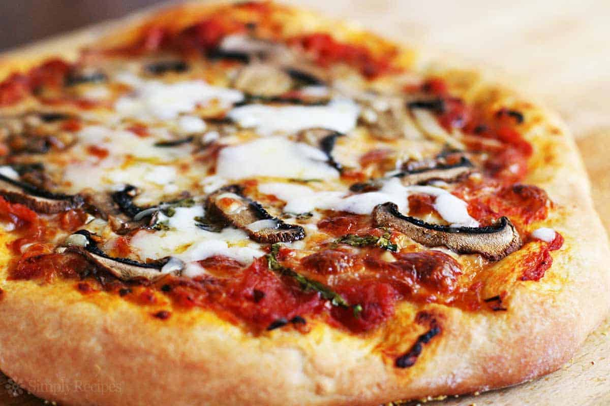

Ingredients
- Pizza Dough
1½ cups (170 g) of self-rising flour
1 c (240 mL) of Greek yogurt, plain
Makes one 12 in (30 cm) pizza crust
- Pizza Sauce
3 to 3 1⁄2 c (710 to 830 mL) of tomato purée
2 cloves of minced garlic
2 tsp (9.9 mL) of red wine vinegar
½ tsp (2.5) of kosher salt
Makes 3 to 3 1⁄2 c (710 to 830 mL) of sauce
- Pizza Toppings
Grated cheese
Pepperoni (optional)
Sausage (optional)
Mushrooms (optional)
Onions (optional)
Steps to prepare
- Preheat the oven to 500 degrees farhrenied
The oven needs to be really hot to brown the crust. Texture is everything when it comes to the perfect pizza crust, and a screaming-hot oven is essential to getting your crust deliciously crisp rather than soft
- Form the dough
Combine plain Greek yogurt and self-rising flour to form your crust. A good ratio is 1½ cups (170 g) of self-rising flour and 1 c (240 mL) of plain Greek yogurt—it’ll create the perfect amount of dough for a 12 in (30 cm) pizza.[2]
If you’d rather make a bigger, 16 in (41 cm) pizza, increase the dough recipe so you’re working with 3 cups (340 g) of self-rising flour and 2 c (470 mL) of plain Greek yogurt instead
- Knead the dough for 8–10 minutes.
The kneading process helps give the pizza dough structure.
The kneading process helps give the pizza dough structure. Transfer the dough onto a floured surface and press into it with the base of your palm. Then, grab the back edge of the dough and pull it toward you, folding it over the rest of the dough. Dust the top of it with flour, and then continue alternating between pressing and pulling. Keep kneading until the dough has a smooth texture.[3]
If the dough feels too sticky, add a little more flour to it.
- Spritz the pizza pan with cooking spray.
This makes the pizza easy to remove later.
This makes the pizza easy to remove later. If you don’t have a pizza pan, improvise with another pan that’s large enough to fit a 12 in (30 cm) pizza crust, like a:
Baking sheet that’s flipped over
Cast iron skillet
Baking steel
- Spread the dough out on the pan.
An even, consistent dough spread makes for an even better pizza.
An even, consistent dough spread makes for an even better pizza. Place the kneaded pizza dough in the center of the greased pizza pan, working it toward the edges. As you roll and manipulate the dough, try to keep the thickness as consistent as possible. You don’t want one section to be super thin and crunchy and the other to be thick and doughy!
- Bake just the crust for at least 5 minutes.
It helps to cook the crust before adding any toppings.
It helps to cook the crust before adding any toppings. Slip the pizza pan in the oven and set a timer for 5 minutes. Keep an eye on the dough as it bakes—if the dough seems a bit undercooked, leave it in for another minute or two.
- Make your pizza sauce.
Tomato purée...
Tomato purée, minced garlic, and red wine vinegar make for a tasty sauce. Grab a mixing bowl and pour in 3 to 3 1⁄2 c (710 to 830 mL) of tomato purée, 2 minced garlic cloves, and 2 tsp (9.9 mL) of red wine vinegar. Mix everything together thoroughly until it forms a consistent sauce.
- Pour the sauce over the baked crust.
Apply the sauce in an even layer for a delicious pizza experience.
Apply the sauce in an even layer for a delicious pizza experience. Add as much sauce as you want. If you have any remaining, refrigerate it in an airtight container and consume within a week.
- Sprinkle cheese on top.
Mozzarella is a classic, but you can branch out, too.
Mozzarella is a classic, but you can branch out, too. Grab a bag of pre-grated cheese and sprinkle as much or as little as you want over the surface. Parmesan, cheddar, Monterey jack, provolone, and other cheeses can be delicious additions to your homemade pie as well, so don’t be afraid to experiment![9]
Keep in mind that pre-grated cheeses tend to have additives. If you want even fresher ingredients, there’s no harm in grating the cheese yourself.
- Add your preferred toppings.
Toppings really let you make the pizza your own.
Toppings really let you make the pizza your own. In the mood for a hearty, meat-filled slice? Opt for some of the classics, like pepperoni or Italian sausage. Prefer something lighter? Sprinkle some veggies on top, like spinach, diced tomatoes, or even broccoli. It’s hard to go wrong with combos like:
Onions and mushrooms
Olives and feta cheese
Sausage and green peppers
Ham and pineapple
- Bake for another 5–7 minutes.
This final bake will give your pizza that perfect gooey taste.
This final bake will give your pizza that perfect gooey taste. Now that your perfect pizza is fully assembled, it’s time to slide it back in the oven and wait another 5 to 7 minutes for the sauce, cheese, and toppings to meld together into irresistible goodness. Once the crust is perfectly browned and the cheese is fully melted, it’s time to dig in![10]
To give your slice a spicy kick, sprinkle some red pepper flakes on top before serving.
Not sure what to pair with your freshly-made pizza? Opt for side dishes like garlic green beans, roasted asparagus, chopped salad, roasted broccoli, or cooked spinach.
- Refrigerate any leftovers for 3-4 days.
Stash any leftover pizza slices in a sealable plastic bag.
Stash any leftover pizza slices in a sealable plastic bag. Once your pizza has thoroughly cooled off, slip the pieces into a plastic bag. If you have multiple slices leftover, simply stack them on top of one another, seal the bag, and slip it into the fridge.[12] Over the next 3-4 days, reheat your slices and enjoy